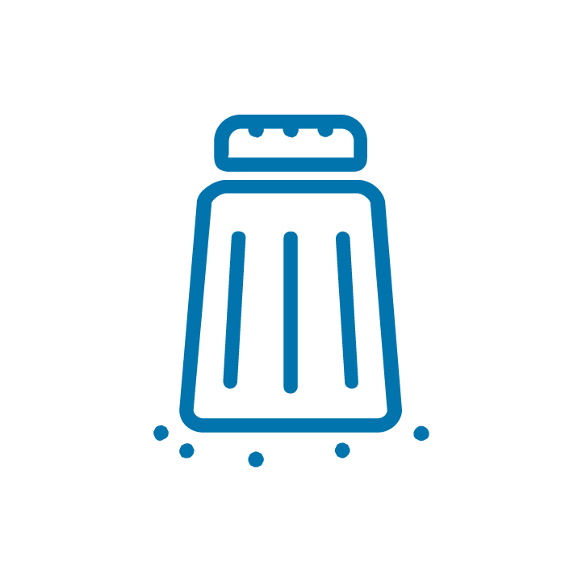
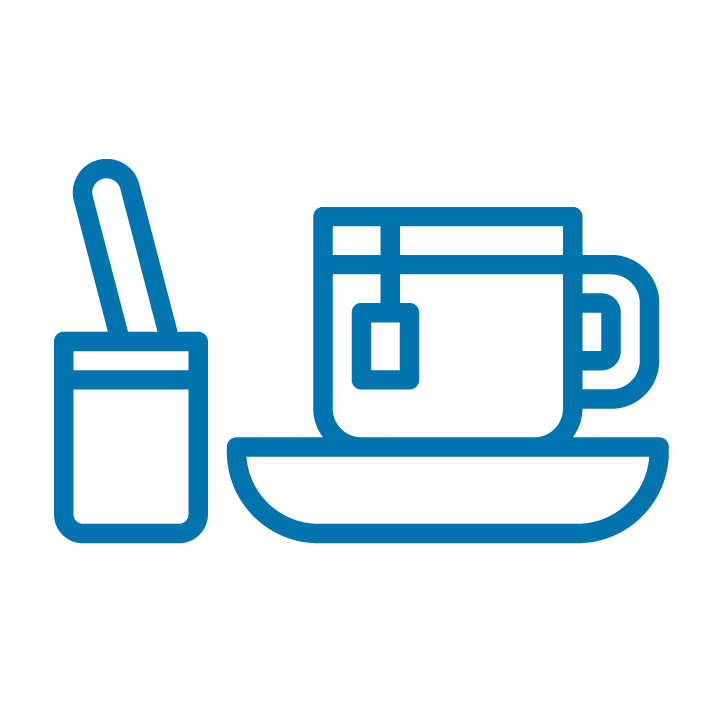
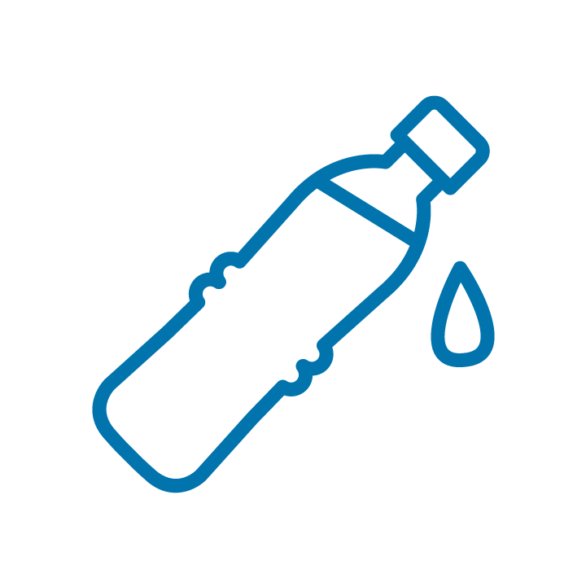
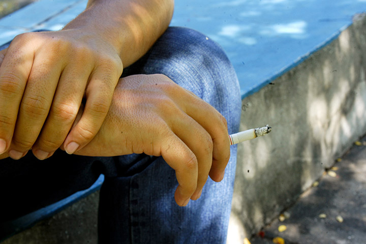

Módulo 5 | Aula 1 Autocuidado no âmbito pessoal
Tópico 1
Ações de autocuidado na APS
A forma como cada trabalhador da saúde cuida de si reflete em sua prática profissional e, consequentemente, pode impactar também em sua vida pessoal. Ou seja, há uma relação entre a atuação do eu profissional, o autocuidado do eu pessoal e sua qualidade de vida, pois como ser integral não há possibilidade de separar os diversos âmbitos da vida de um indivíduo. Há evidência de que o esgotamento profissional impacta negativamente na qualidade de vida que, consequentemente, afeta a atuação (ALVES, 2017). Sabendo disso, imagine o impacto na qualidade de vida, na atuação profissional e, consequentemente, no cuidado prestado aos usuários/pacientes se cada trabalhador da saúde incorporasse ações de autocuidado.
O autocuidado refere-se às habilidades individuais ou coletivas em promover saúde, prevenir doenças, manter a saúde e lidar com a doença ou a incapacidade com ou sem o suporte de um profissional de saúde (WHO, 2021). Em outras palavras, refere-se à capacidade do próprio indivíduo em realizar ações que visam à preservação de sua saúde, ao seu desenvolvimento e bem-estar (SUPLICI et al., 2021). É uma atividade do indivíduo orientada para um objetivo, ou seja, uma ação desenvolvida em situações concretas da vida e que o indivíduo dirige para si mesmo ou para regular os fatores que afetam o seu próprio desenvolvimento, atividades em benefício da vida, saúde e bem-estar (SILVA et al., 2009).
O autocuidado é essencial para melhorias na saúde, mas para tal deve ser uma escolha consciente que, com passos iniciais, têm-se o acesso e a compreensão de orientações em prol da saúde, seguido da gestão desse conhecimento, por meio da reflexão de aspectos que poderiam ser modificados e investimento por meio de efetivação das ações planejadas (SABOGA-NUNES; MARTINS; FARINELLI; JULIÃO, 2019).
Um exemplo de metas e planejamentos pessoais envolve a mudança de hábitos alimentares. Muitas pessoas investem em uma mudança na alimentação com o intuito de perder peso, mas sem acessar, compreender e gerir os conhecimentos relacionados a ela, acabam se privando de vários alimentos, desenvolvendo compulsões e distúrbios alimentares, carências nutricionais e/ou, ainda, perdendo massa muscular.
Ainda, alinhado à Política Nacional de Práticas Integrativas e Complementares, é importante mencionar que há práticas integrativas e complementares que podem contribuir de modo relevante para a promoção do autocuidado, devendo ser avaliado caso a caso. São exemplos o tai chi chuan, yoga, meditação e acupuntura, entre outras.
A seguir, são descritas algumas ações importantes para o autocuidado em saúde:
Atividade física
Os benefícios da prática regular de atividades físicas são vários e incluem, por exemplo, o controle do peso corporal, a diminuição da chance de desenvolvimento de doenças crônicas, a possibilidade de interação social, a melhora da autoestima e da imagem corporal, entre outros. Mas, no contexto salutogênico, a atividade física ajuda as pessoas a prepararem o seu corpo para se libertarem das pressões e do estresse e, consequentemente, tem impacto nas reações, percepções e sintomas vividos, inclusive durante a pandemia (BITENCOURT; SIMÕES, 2019; SOUSA et al., 2021).
O corpo se constitui na experiência pessoal, individual, com e no exterior. E o movimento desse corpo integral estabelece uma relação que transforma, seja pela prática corporal, atividade física ou exercício físico (WARSCHAUER, 2017). Ambos os movimentos beneficiam a saúde de seus praticantes por favorecer melhorias na qualidade de vida. Estes são positivos para a saúde mental, física e até social. Mas, além desses benefícios, a prática regular de atividade física também possibilita atingir alguns objetivos específicos.
Quando a atividade física é planejada e estruturada com o objetivo de melhorar e/ou manter os componentes físicos, como a estrutura muscular (ganho de massa muscular = hipertrofia), a flexibilidade ou o equilíbrio, é chamada de exercício físico (BRASIL, 2021). Clique nas setas e veja mais benefícios da prática regular de atividades físicas.
Algumas ações simples podem ser os primeiros passos para uma pessoa mudar o comportamento sedentário. Conhecer os diferentes domínios (contextos) nos quais a atividade física pode ser praticada (deslocamento, tempo livre, trabalho ou estudo e tarefas domésticas) pode ampliar as possibilidades de inserir esse comportamento no dia a dia.
Comece de formas simples, deslocando-se de forma ativa (ir a pé ou de bicicleta, por exemplo, de um lugar para o outro - ir ao mercado ou à feira, para o trabalho ou para o local de estudo, descer do ônibus algumas paradas antes do destino final e completar o percurso a pé, estacionar o veículo em um ponto um pouco mais distante e completar o percurso a pé). Se possível, utilize as escadas ao invés do elevador, faça passeios com o animal de estimação, realize brincadeiras e jogos ativos com os filhos ou netos. Evolua para a prática de esportes no tempo livre como, jogar vôlei, futebol, basquete e outros.
Para refletir...
E para você, o que falta para investir ou melhorar sua rotina de atividades físicas? É possível parcerias no bairro ou com outros profissionais de saúde que atuam em sua unidade para propor aos usuários a redução do comportamento sedentário?
Alimentação
Atualmente, muito se fala em uma alimentação mais natural, com menos alimentos ultraprocessados, no aumento do consumo de fibras, no “descascar mais e desembalar menos” e nos benefícios da alimentação balanceada e saudável para o fortalecimento do sistema imunológico, impactos no humor, manutenção do peso e das taxas de colesterol, triglicérides, dentre outros.
A ingestão de nutrientes propiciada pela alimentação é essencial para a boa saúde. Igualmente importantes para a saúde são os alimentos específicos que fornecem os nutrientes, as inúmeras possíveis combinações entre eles e suas formas de preparo, as características do modo de comer e as dimensões sociais e culturais das práticas alimentares. Também é fundamental refletir no contexto cultural e familiar no qual está inserido, pois o Brasil é um país de dimensões extensas e com uma enorme diversidade.
A alimentação adequada e saudável é um direito humano básico que envolve a garantia ao acesso permanente e regular, de forma socialmente justa, a uma prática alimentar adequada aos aspectos biológicos e sociais do indivíduo e que deve estar em acordo com as necessidades alimentares especiais; ser referenciada pela cultura alimentar e pelas dimensões de gênero e etnia; acessível do ponto de vista físico e financeiro; harmônica em quantidade e qualidade, atendendo aos princípios da variedade, equilíbrio, moderação e prazer; e baseada em práticas produtivas adequadas e sustentáveis.
Portanto, a alimentação adequada e saudável é muito mais que ingerir alimentos, abrange a combinação dos alimentos entre si e a forma como são preparados, os aspectos culturais, sociais, históricos, familiares, individuais, econômicos.
Os benefícios da adoção de uma alimentação adequada e saudável são vários, incluindo melhor digestão dos alimentos, menor risco de desenvolvimento de doenças crônicas, controle mais eficiente do quanto comemos, maiores oportunidades de convivência com nossos familiares e amigos, maior interação social e, de modo geral, mais prazer com a alimentação. Uma alimentação saudável melhora a qualidade de vida de todos, inclusive dos animais e do planeta!
A OMS considera a atividade física e a alimentação saudável os principais ganhos para a saúde da comunidade (BRASIL, 2019).
De acordo com o Guia Alimentar para a população brasileira, a regra de ouro para uma alimentação adequada e saudável é “Prefira sempre alimentos in natura ou minimamente processados e preparações culinárias a alimentos ultraprocessados”. Clique nos títulos e veja mais algumas orientações contidas no Guia.

O Guia também orienta para que os alimentos in natura ou minimamente processados sejam a base da alimentação; que se utilize óleos, gorduras, sal e açúcar em pequenas quantidades ao temperar e cozinhar alimentos e criar preparações culinárias, que se limite o uso de alimentos processados, consumindo-os, em pequenas quantidades, como ingredientes de preparações culinárias ou como parte de refeições baseadas em alimentos in natura ou minimamente processados. Evite alimentos ultraprocessados. Aumente o consumo de fibras, como frutas, verduras e legumes, dando preferência a alimentos integrais. Conheça e valorize alimentos e preparações da estação e regionais.
Diminua o sal da comida, procure substituir por temperos naturais, como cebola, alho, louro, salsinha, cebolinha, pimenta, coentro e outros de sua preferência. Evite o uso de temperos prontos/instantâneos. A ingestão recomendada diária de sal para um adulto é de 5 gramas de sal de cozinha.

Sucos, chás, café devem ser ingeridos sem açúcar ou adoçantes e evite ou limite bebidas alcoólicas.

Informe-se sobre a relação do consumo de carne e laticínios, a destruição ambiental e a fome mundial (OMS, 2019; BRASIL, 2019). Considere redução no consumo de carne e/ou adotar o vegetarianismo/veganismo.
Ingesta hídrica
A água é um elemento indispensável para promover estilos de vida saudáveis. É preciso repensar seu consumo, quantidade de ingestão para hidratação e aceleração do processo de eliminação (interna e externa) de resíduos tóxicos para o organismo, e sobre os impactos ambientais decorrentes/provenientes do uso deste recurso.

Quanto à ingestão hídrica diária, é importante estar atento aos sinais de sede e satisfazê-la, já que a quantidade diária é muito variável e dependente de diversos fatores como idade, se atleta ou sedentário, clima dentre outros (BRASIL, 2019). Lembre-se da quantidade de água que costuma ingerir e se sente muita sede ao longo do dia.
Para refletir...
Repense se utiliza estratégias como beber um copo de água ao acordar e antes de dormir, ter sempre uma garrafa de água potável não adoçada próxima e também se desperdiça muita água, como lavando calçadas ou deixando a torneira aberta enquanto lava a louça. Que tal abordar sobre a temática da água, seu consumo e gasto com os usuários nas atividades de sala de espera?
Exposição à luz solar
A luz solar evita doenças e traz bem-estar, pois é através da exposição ao sol que o organismo produz a vitamina D. Dessa forma, 5 a 10 minutos de exposição diária já são capazes de proporcionar benefícios, tais como: manutenção da massa óssea e influência positiva no sistema imunológico (XAVIER, 2022).
Para refletir...
Você costuma se expor à luz solar direta, diariamente? Lembre-se da proteção solar em outros momentos.
Sono e descanso
Preocupações e situações incertas podem resultar em maior dificuldade dos indivíduos em vivenciar repouso e sono. No entanto, são imprescindíveis para recuperação do físico e da mente, consolidação de hábitos saudáveis, realização de escolhas conscientes e melhoria na capacidade de gestão das emoções (SOUSA; MOREIRA; JULIÃO; ANDRADE, 2021). Todas as pessoas possuem direito ao descanso e lazer (ONU, 1948).
Para refletir...
Quanto tempo semanal você reserva para usufruir do descanso/lazer e do sono com qualidade? Este tempo deve ser contabilizado como um compromisso de autocuidado; tem sido suficiente a quantidade dedicada a ambos?
Entretanto, para se ter um sono adequado e de qualidade, com um mínimo de 7 horas por dia, deve-se praticar a higiene do sono, que significa alguns cuidados básicos antes do horário habitual de dormir, considerando o ritmo circadiano (dia/noite) do organismo, tais como: evitar dispositivos que emitem luz azul (como celulares, computadores e televisão imediatamente antes de dormir) e certificar-se de que o ambiente está com temperatura agradável e sem luz, pois a luz pode alterar o relógio biológico do organismo, como se estivesse num outro “fuso horário”.
Ao planejar sua semana comece pelo tempo dedicado ao sono, pois é comum que diante de tantos afazeres o sono seja a primeira das atividades a ser reduzida.
Saúde mental e equilíbrio
Esta temática refere-se aos diversos aspectos ou áreas da vida na qual existe uma atitude, ação ou reação desbalanceada, já que qualquer atitude em excesso pode ser prejudicial para a saúde.
É necessário, para o ser humano, manter um balanço entre as diversas necessidades e atribuições da vida, como tempo para trabalhar, tempo para descansar (sono e repouso), tempo para lazer, tempo para a família, tempo dedicado para o desenvolvimento pessoal, dentre outros.
Neste contexto, cuidar da saúde mental favorece o alcance desse equilíbrio e deve ser visto como uma prioridade para os serviços de saúde em geral, sobretudo a APS. Segundo Feldman (1997), 70% das consultas na APS são relacionadas ao estresse e hábitos de vida. Trata-se de um círculo vicioso, em que pessoas estressadas tendem a assumir piores hábitos de vida, ficando com um estado de saúde pior, favorecendo o aparecimento de doenças agudas ou crônicas. O próprio estado de saúde mental prejudicado, como a presença de situações de estresse, ansiedade ou depressão por períodos prolongados, podem causar danos à saúde física, bem-estar e qualidade de vida das pessoas.
Para promover a saúde mental, a prática de atividade física é um recurso valioso e com comprovação científica de sua eficácia (RIMER, 2012; COONEY, 2013). Outras práticas relaxantes como meditação, meditação de atenção plena (mindfulness) e ioga também apresentam benefícios já comprovados (GOYAL, 2014). Também trazem benefícios à saúde mental os cuidados já mencionados com a alimentação, contato com a natureza e pausas reparadoras (sono, descanso).
Dentre as temáticas já abordadas, bem como pensando nos âmbitos pessoal, familiar, profissional, financeiro e espiritual, busque áreas de vulnerabilidade para o desequilíbrio e foque nesse ponto para planejar suas ações de autocuidado.
Manutenção de hábitos saudáveis
Cessação do uso de substâncias tóxicas: tabagismo e transtorno por uso de álcool.
Vale ressaltar que é importante que o profissional de saúde esteja atento para fatores que podem impactar prejudicialmente a sua saúde e/ou dos usuários. O uso de substâncias tóxicas, como o tabaco e o consumo de álcool, ainda é uma realidade e deve ser levado em conta nas práticas da APS, no sentido de dar apoio à cessação desses hábitos, abordando inclusive os riscos do cigarro eletrônico. Embora sua comercialização e propaganda seja proibida no Brasil, a prevalência de experimentação de cigarro eletrônico entre os jovens tem aumentado significativamente nos últimos anos.

O tabagismo está relacionado a diversos tipos de câncer e a doenças cardiovasculares. É responsável por cerca de 90% dos óbitos por câncer de pulmão e é fator de risco para doenças crônicas não transmissíveis (CDC, 2022; Ministério da Saúde, 2022). Pode levar a ou piorar a evolução de diversas doenças, tais como: diabetes, artrite reumatoide, tuberculose, além de piorar a qualidade de vida da pessoa, aumentar o risco de fraturas, problemas circulatórios, dentre outros.
A cessação do hábito de fumar apresenta vários benefícios para a saúde, incluindo a redução no risco de se desenvolver câncer de pulmão, doença cardiovascular e periférica, Acidente Vascular Cerebral (AVC) e Doença Pulmonar Obstrutiva Crônica (DPOC) (WHO, 2020; CDC, 2022).
O transtorno por uso de álcool, que pode causar impactos prejudiciais na qualidade de vida das pessoas também deve ser avaliado e reavaliado em todas as consultas nas Unidades Básicas de Saúde, desde a adolescência, conforme o planejamento terapêutico disponível na Linha de Cuidado.
Saiba mais...
- Para abordagem da pessoa tabagista, recomenda-se a abordagem básica e intensiva, conforme o Protocolo Clínico e Diretrizes Terapêuticas do Tabagismo e Linha de Cuidado do Ministério da Saúde.